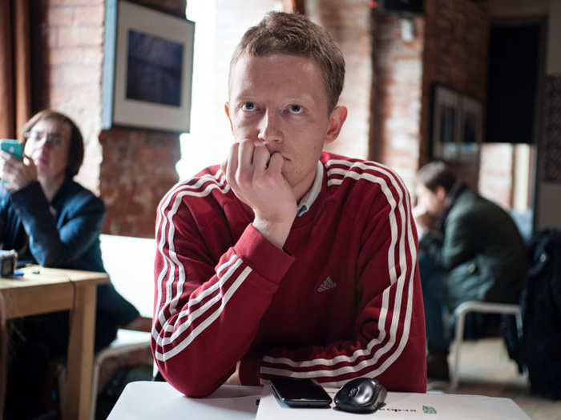
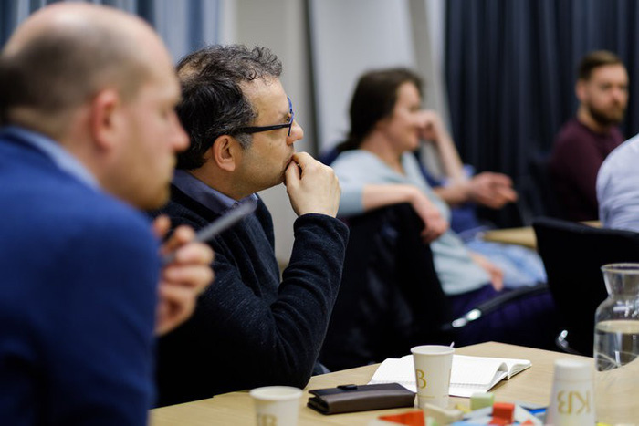

Thời Điểm nào bạn không nên khởi nghiệp kinh doanh?
1. Thiếu máu liều
Theo hãng tư vấn tài chính cho doanh nghiệp nhỏ Fundera, khoảng 70% startup không tồn tại vượt qua năm thứ 10. Kể cả khi có sản phẩm hay dịch vụ tuyệt vời, một startup vẫn có thể gặp phải những rào cản ngoài dự kiến, từ cạn tiền cho tới mất động lực tăng trưởng. Để giải quyết rủi ro này, "mỗi doanh nhân nên đưa vào dự tính riêng của mình" việc khi nào công ty có thể sinh lời và trả lương cho người sáng lập, theo Langer-Croager. Lịch trình dự tính này nên "gắn liền với tình hình tài chính của những người sáng lập". Nói cách khác, doanh nhân khởi nghiệp nên tự tính toán về việc có thể cung cấp tài chính cho startup được bao lâu và hiểu rõ liệu startup có khả năng không thể sinh lời hay không. Langer-Croager cho rằng bằng cách đó, việc "quản lý rủi ro sẽ trở lên dễ dàng hơn đôi chút". .
Thiếu "máu" liều hay cần có lợi nhuận nhanh chóng là hai trong nhiều dấu hiệu cho thấy một người không nên khởi nghiệp kinh doanh riêng .
2. Có "Tư duy khan hiếm"
"Những người có 'tư duy khan hiếm' thường nghĩ rằng không có đủ cơ hội hay nguồn lực cho họ", Langer-Croager nói. Điều này có thể dẫn đến cảm giác tuyệt vọng, khiến họ theo đuổi những con đường làm hại cho doanh nghiệp của mình, thay vì chờ đợi thời cơ tốt hơn. Theo Langer-Croager, đây là cạm bẫy kể cả với những chủ doanh nghiệp có nhiều kinh nghiệm khi công ty của họ rơi vào khủng hoảng.
3. Cần lợi nhuận nhanh chóng
Theo Small Business Trends, chỉ 40% startup thực sự có lợi nhuận và 82% công ty nhỏ thất bại do những vấn đề về dòng tiền. Langer-Croager cho biết một startup có thể mất nhiều năm để sinh đủ lợi nhuận để người sáng lập có thể tự trả lương cho mình. "Nếu cố gắng kiếm tiền thật nhanh, bạn sẽ phải chịu rất nhiều áp lực khi startup không phát triển theo đúng cách (để có thể sinh lời), Langer-Croager nói.
4. Không hiểu các số liệu kinh doanh
Một doanh nhân cần phải hiểu rõ được tình hình tài chính của startup của mình. Theo Langer-Croager, nếu một người không hiểu được các con số về tài chính, họ có thể bỏ qua những dấu hiệu quan trọng cho thấy cần phải điều chỉnh kế hoạch kinh doanh. "Việc không hiểu được những vấn đề tài chính đó có thể dẫn đến các quyết định cảm tính thay vì sáng suốt", Langer-Croager cho biết. Điều này có thể dẫn đến thảm hoạ cho startup.
5. Không có kế hoạch kinh doanh
Theo một nghiên cứu từ Đại học Michigan, một kế hoạch kinh doanh tốt giúp tăng cơ hội tồn tại cho startup. "Nếu đang chuẩn bị thành lập một công ty, bạn cần phải tiến hành nghiên cứu thị trường và xây dựng một kế hoạch kinh doanh", Langer-Croager nói. Kể cả khi đã thành lập công ty, vẫn chưa quá muộn để xây dựng một kế hoạch giúp mang lại "kim chỉ nam" để đạt được các mục tiêu và gắn chặt với sứ mệnh của mình.
6. Chưa thử nghiệm ý tưởng kinh doanh trên thị trường
Một khảo sát của CB Insights về những "thất bại của startup sau khi ra đời" cho thấy lý do hàng đầu khiến một startup "chết yểu" là sản phẩm không có thị trường. "Bạn có thể mất rất nhiều thời gian, công sức và tiền bạc để tạo ra một thứ gì đó không được thị trường chấp nhận", Langer-Croager nói. Vì vậy, một doanh nhân cần đảm bảo thực hiện nghiên cứu thị trường trước khi triển khai ý tưởng kinh doanh của mình. Điều này có nghĩa là phải làm bất cứ thứ gì từ khảo sát thị trường, thử marketing một vài sản phẩm mẫu cho tới tìm tư vấn từ chuyên gia uy tín về kinh nghiệm trong lĩnh vực mình đang theo đuổi.
8. Khả năng tự thân vận động kém
Tự thân vận động là khả năng thành lập và điều hành một doanh nghiệp từ nguồn lực cá nhân hạn chế tới một thời điểm tăng trưởng khi mà cần có thêm nguồn lực từ bên ngoài. Tuy nhiên, một khoản vay kinh doanh có thể khiến chủ startup phải nai lưng trả nợ trong nhiều năm nếu công ty thất bại. Câu hỏi đặt ra là họ có thể chấp nhận được rủi ro ở mức độ nào?
2. Có "Tư duy khan hiếm"
"Những người có 'tư duy khan hiếm' thường nghĩ rằng không có đủ cơ hội hay nguồn lực cho họ", Langer-Croager nói. Điều này có thể dẫn đến cảm giác tuyệt vọng, khiến họ theo đuổi những con đường làm hại cho doanh nghiệp của mình, thay vì chờ đợi thời cơ tốt hơn. Theo Langer-Croager, đây là cạm bẫy kể cả với những chủ doanh nghiệp có nhiều kinh nghiệm khi công ty của họ rơi vào khủng hoảng.
Bài viết gần đây
-

Cặp vợ chồng 9X về quê nuôi con tai dài, lợi nhuận tiền tỷ mỗi năm
Năm 2016, cặp vợ chồng 9X Trương Hiểu Lộ và Tào Vỹ quyết tâm về quê ở huyện Jimsar, Tân Cương, Trung Quốc khởi nghiệp. Sau 3 năm cố gắng...
-

Kiếm thêm vài chục triệu một năm chỉ nhờ 10 phút mỗi ngày ngay tại nhà
Peter Chatfield, 39 tuổi, đã quyết tâm kiếm thêm tiền tại nhà sau khi gia đình chịu khoản nợ trị giá 7.000 bảng Anh (hơn 200 triệu VND).
-

Thành tỷ phú từ thứ lá "quê mùa" có đầy ở Việt Nam
Một cô gái trẻ từ bỏ công việc văn phòng, làm giàu từ chính lá trà xanh quê mình
-
Cặp vợ chồng 9X về quê nuôi con tai dài, lợi nhuận tiền tỷ mỗi năm
Năm 2016, cặp vợ chồng 9X Trương Hiểu Lộ và Tào Vỹ quyết tâm về quê ở huyện Jimsar, Tân Cương, Trung Quốc khởi nghiệp. Sau 3 năm cố gắng...
-
Kiếm thêm vài chục triệu một năm chỉ nhờ 10 phút mỗi ngày ngay tại nhà
Peter Chatfield, 39 tuổi, đã quyết tâm kiếm thêm tiền tại nhà sau khi gia đình chịu khoản nợ trị giá 7.000 bảng Anh (hơn 200 triệu VND).
-
Thành tỷ phú từ thứ lá "quê mùa" có đầy ở Việt Nam
Một cô gái trẻ từ bỏ công việc văn phòng, làm giàu từ chính lá trà xanh quê mình
-

Duis condimentum nunc pretium lobortis
Nunc tincidunt, elit non cursus euismod, lacus augue ornare metus, egestas imperdiet nulla nisl quis mauris. Suspendisse a pharetra
-
Duis condimentum nunc pretium lobortis
Nunc tincidunt, elit non cursus euismod, lacus augue ornare metus, egestas imperdiet nulla nisl quis mauris. Suspendisse a pharetra
-
Duis condimentum nunc pretium lobortis
Nunc tincidunt, elit non cursus euismod, lacus augue ornare metus, egestas imperdiet nulla nisl quis mauris. Suspendisse a pharetra